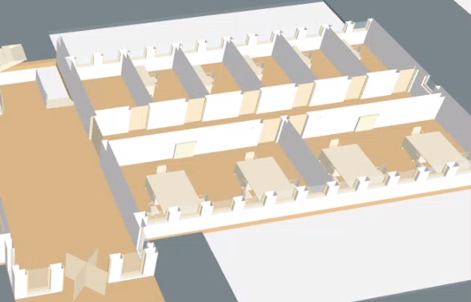
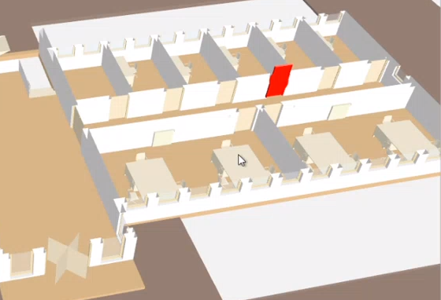
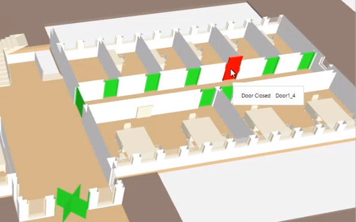
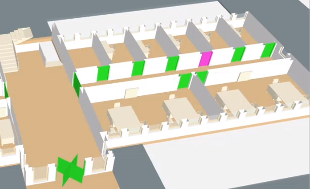
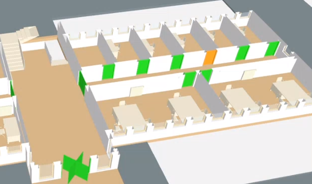
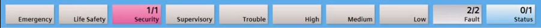
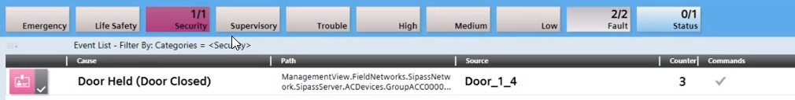
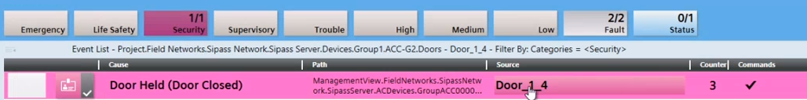
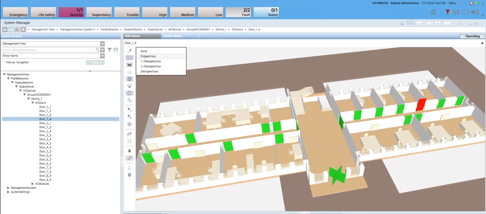

Display Door States
Door states can be displayed in the BIM graphic if integrated in SiPass. The door states are listed below.
Door States Color Code | ||
None |
|  |
Red | Selected door |  |
Red | Door in alarm |  |
Green | Door closed |
|
Purple | Door is manipulated |  |
Yellow | Door held |  |
Prerequisites:
- System Manager is in Operation mode.
- In System Browser, the Management View is selected. BIM graphics can also be selected in the Application View as an alternative.
Select Door
Scenario: You want to know where the door, selected in System Browser, is located.
- Select Project > [Network name] > […] > [Devices] > [Group] > [Device] > [Door].
- The doors are highlighted in color.
Display All Door States on One Floor
Scenario: A BIM graphic is open and you want to see the state of all doors.
- Select Project > [Network name] > […] > [Devices] > [Group] > [Device] > [Door].
- Click Show doors
 .
.
- All doors are highlighted in the color of the state.

Locate Door Alarm
Scenario: Progress is displayed in the Summary bar. You need to know the exact location of the door before acknowledging the event. This workflow can be used on all events for a given door.
- In the summary bar, select the appropriate event Category.

- In the Event Detail bar, select the event.

- In the Source column, select the door description.

- The door with the corresponding event is highlighted in color.


The door is green if the event is no longer pending. In this case, acknowledge the event directly in the summary bar.